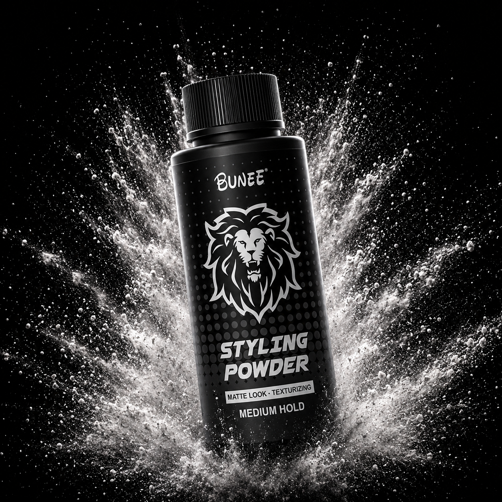
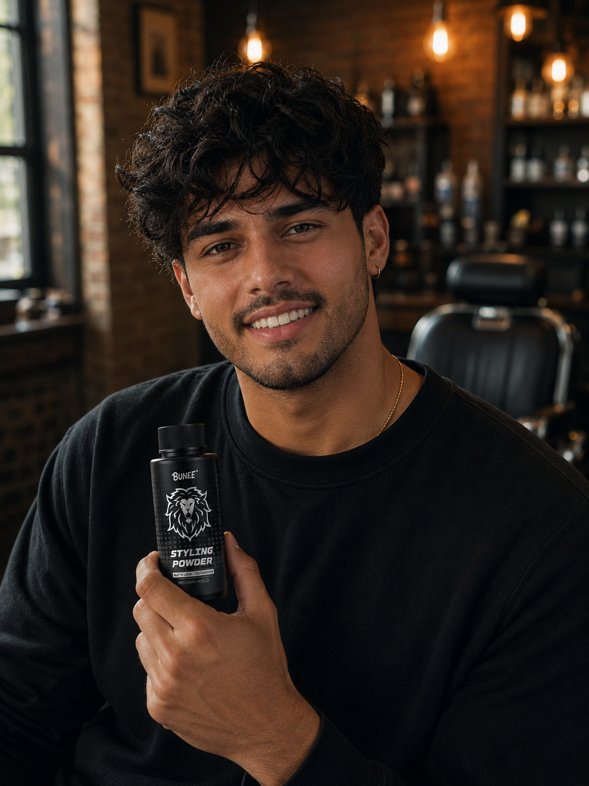
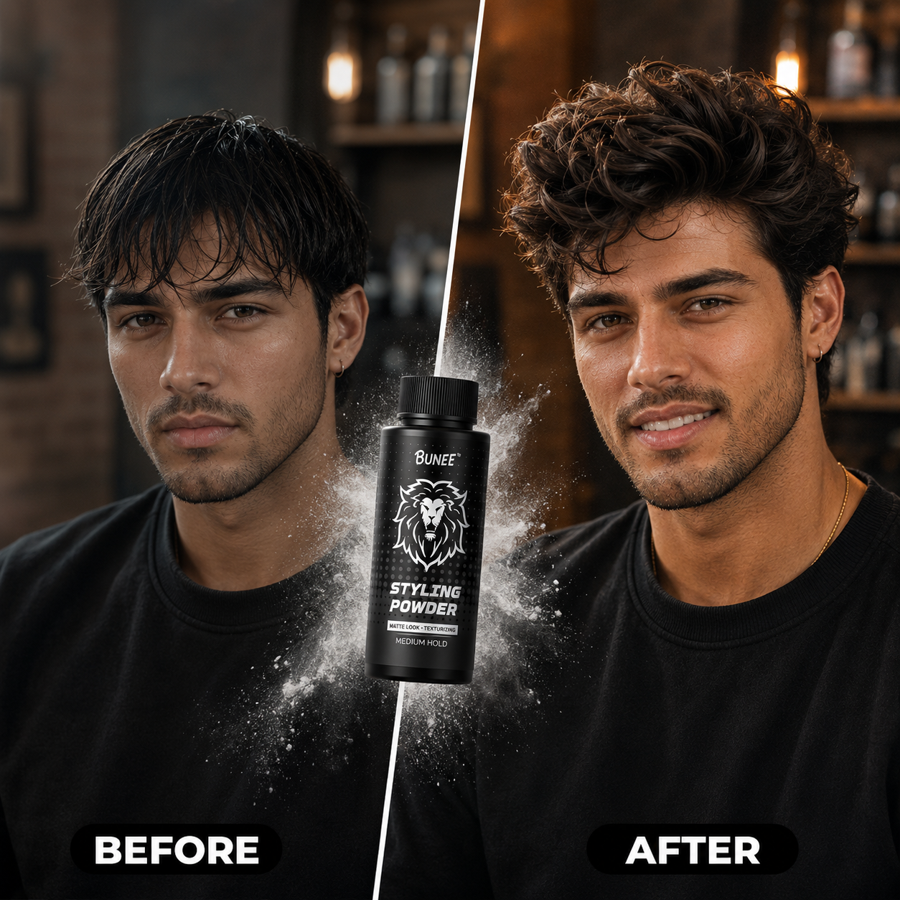
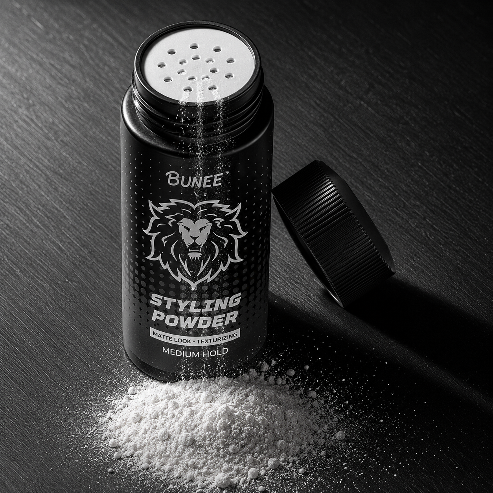
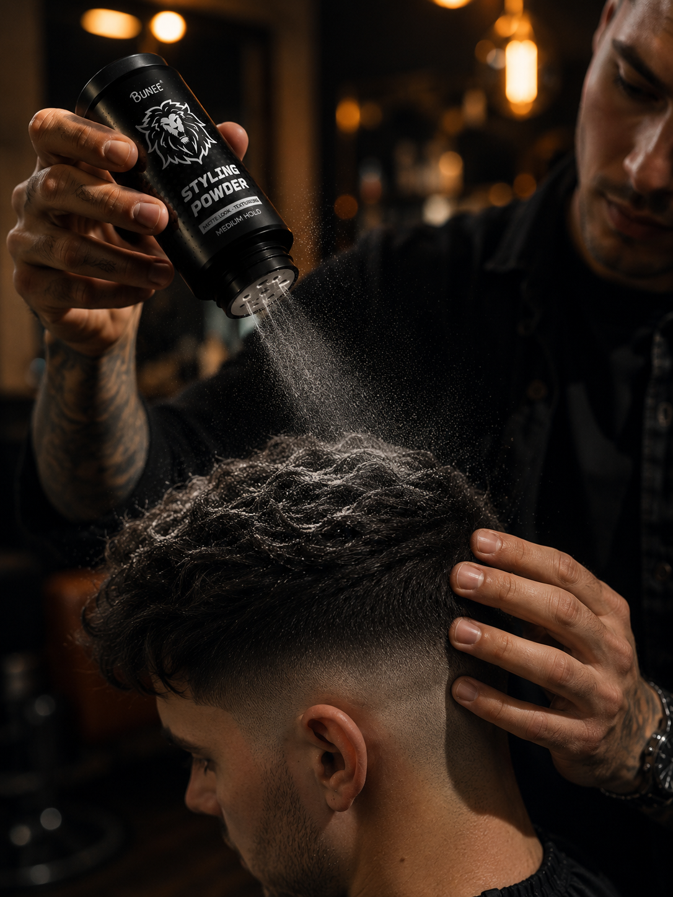
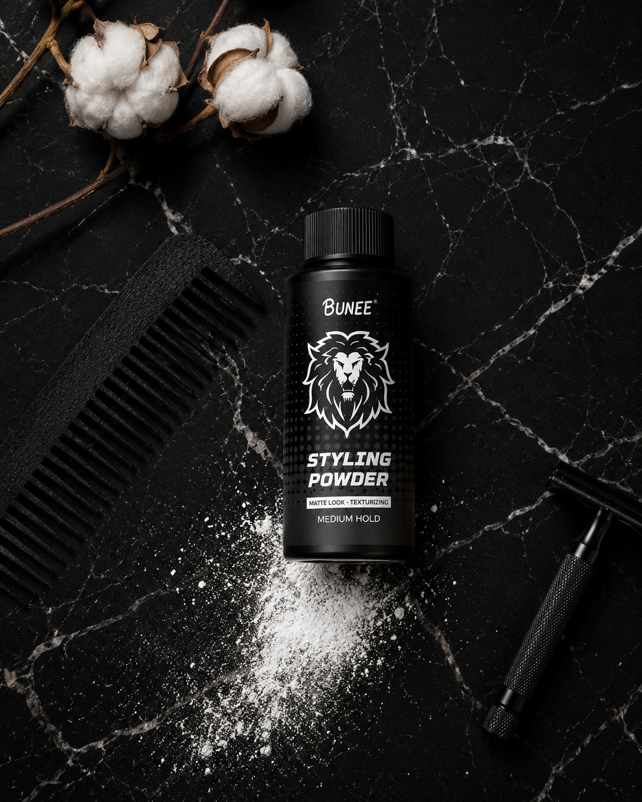
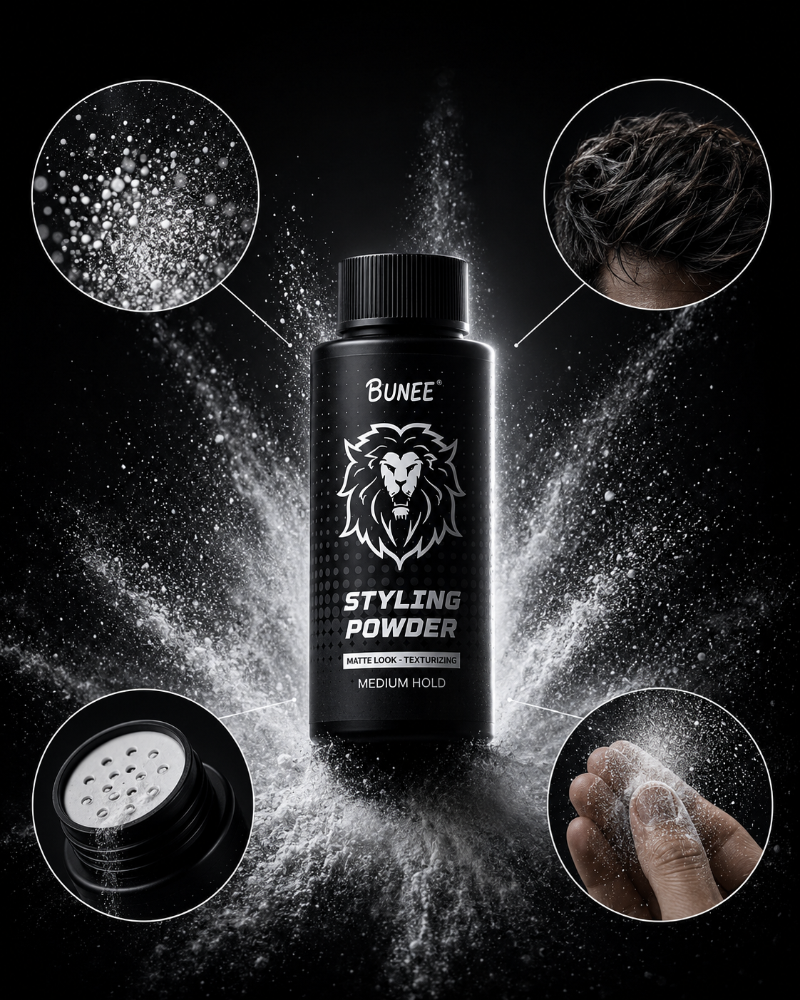
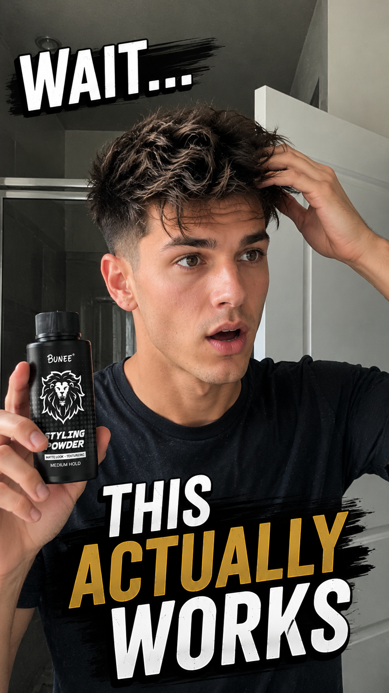
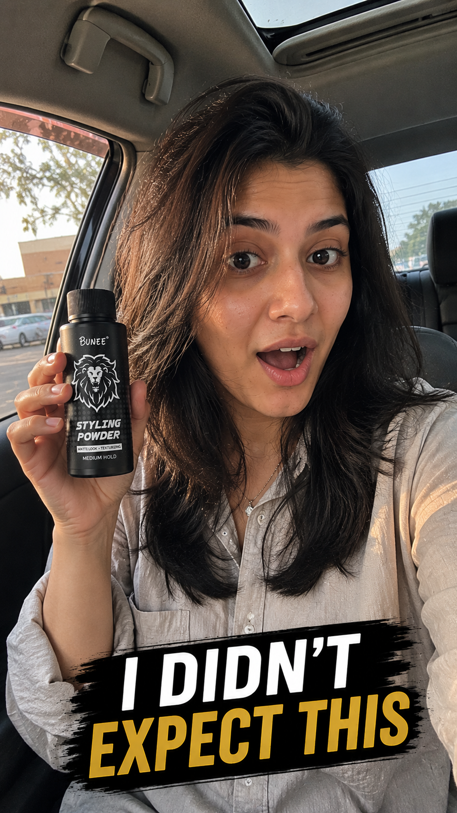

Stop Hiding Thin Hair
Engineered for instant volume, 24-hour weightless lift, and a clean matte texture. Achieve fuller-looking hair in under 10 seconds.
-
[ METRIC_01 ]
ROOT ELEVATION
Micro-mineral particles coat each hair follicle base, creating mechanical friction that locks strands away from the scalp instantly.
-
[ METRIC_02 ]
MATTE OIL-ABSORB
Natural silica silylate extracts absorb grease and sweat directly at the scalp level, leaving a clean, zero-shine dry volume finish.
-
[ METRIC_03 ]
24-HR HOLD ACTIVE
Cross-linking polymers resist external moisture, extreme humidity, wind, and active athletic sweat. Re-styleable on the fly.
-
[ METRIC_04 ]
ZERO WEIGHT-DOWN
Coating particles separate hair fibers without weighing them down. Clays, pomades, and waxes weigh down flat hair—VALO lifts it.
[ WORKFLOW: 3-SECOND HAIR DENSITY ]
-
TAP & DUST
Tap a tiny dusting of VALO powder directly onto dry hair roots.
-
RUFFLE & SHAKE
Run your fingers through your hair to spread the active micro-particles.
-
Instant volume
Shape into place. Instant 2x density, texture, and all-day lift achieved.
WHAT'S INSIDE.

MICRO-MINERAL MATRIX
Ultrafine silica particles coat individual hair strands at the root, creating friction-based lift that defies gravity without weight.
PURITY: 97.3%OIL ABSORPTION ENGINE
Natural kaolin micro-particles absorb excess sebum and sweat at the scalp surface, delivering an all-day matte texture finish.
PURITY: 94.1%24-HOUR HOLD BOND
Flexible cross-linking polymers create an invisible scaffolding between strands, locking volume in place through wind, humidity, and movement.
PURITY: 99.7%THE EVIDENCE.

[ SPECIMEN_02 // TEXTURE_MATRIX ]
[ SPECIMEN_03 // ROOT_ELEVATION ]
[ SPECIMEN_04 // HOLD_STRUCTURE ]
[ SPECIMEN_05 // MATTE_FINISH ]
[ SPECIMEN_06 // VOLUME_STACK ]
[ SPECIMEN_07 // FIBER_COAT ]
[ SPECIMEN_08 // GRAVITY_DEFY ]
[ SPECIMEN_09 // FULL_DEPLOY ]QUESTIONS.
STOP HIDING THIN HAIR.
Join 2,847+ men who upgraded from flat, lifeless hair to instant, raw volume. Your first bottle ships tomorrow.